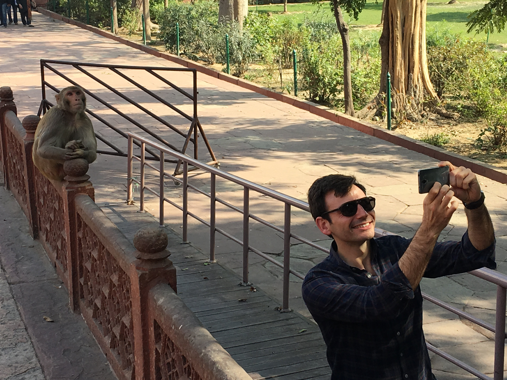
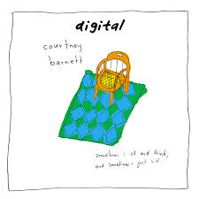
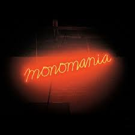
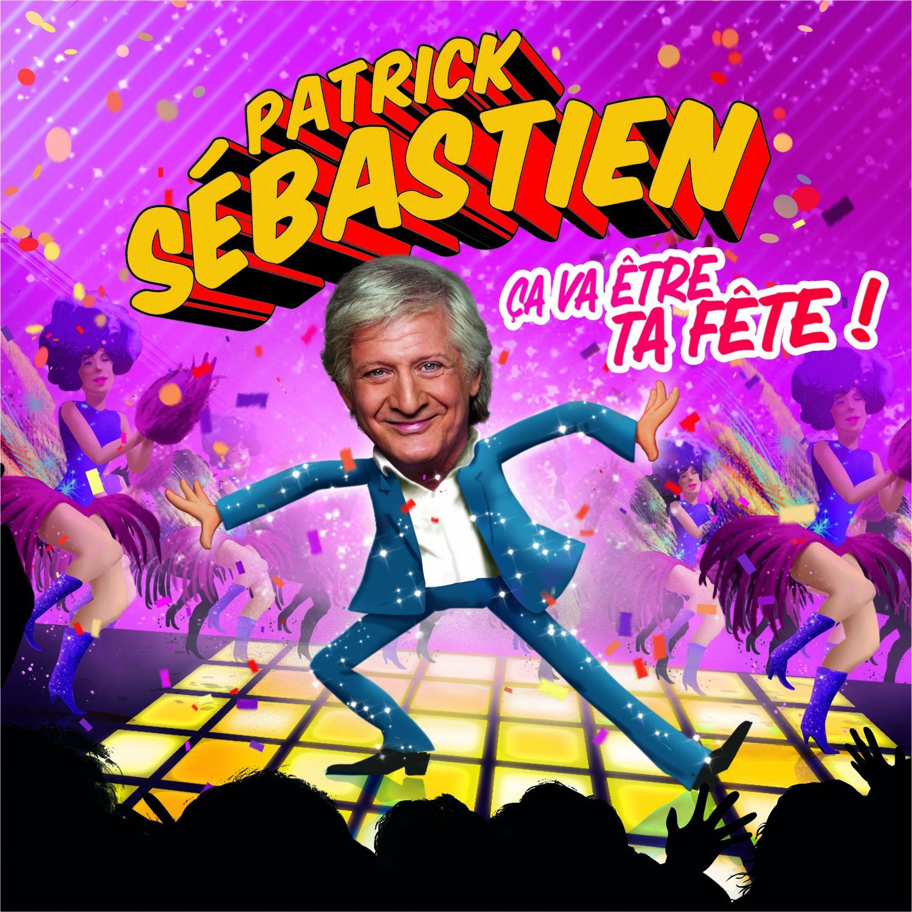

Arnaud Longueval
Student @LeWagon
After 8 years of hard work as a civil engineer, I'm willing to learn to code because I love so much Le Digital
My Zik: Monte le son Marcel!
|  | Courtney Barnett | Courtney Barnett une héritière de Patti Smith, et une grande artiste en devenir |
|  | Deerhunter | Deerhunter se forme à Atlanta (Géorgie) autour du guitariste et chanteur Bradford Cox en 2001. Les autres musiciens sont Moses Archuleta (batterie, claviers), Colin Mee et Lockett Pundt (guitares) et Josh Fauver (basse) |
|  | Patrick Sébastien | Les sardines au top |
About this page
This page has been coded painfully by myself and you had to like it!